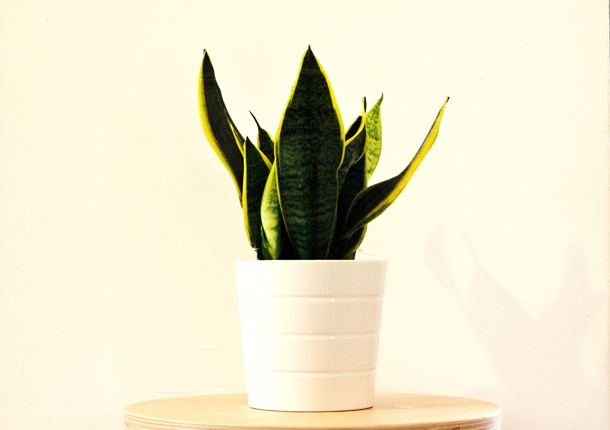
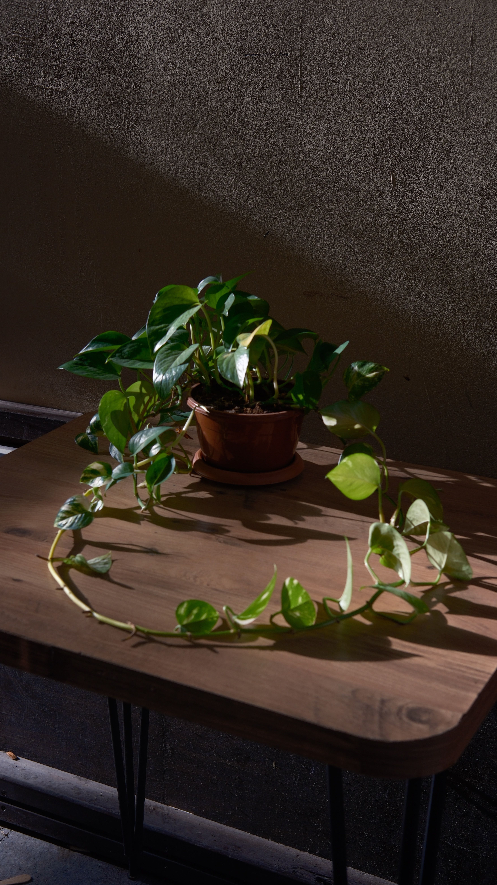
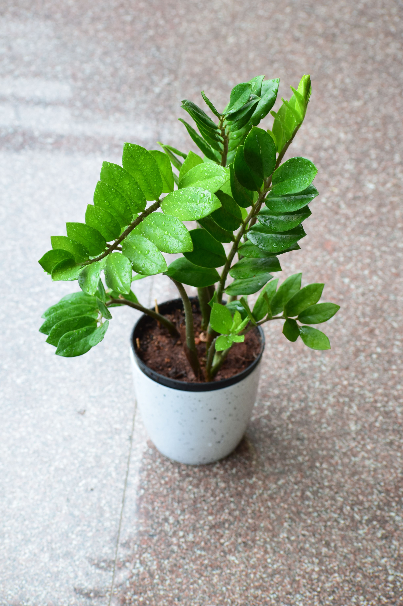

01
산세베리아
물을 자주 주기 어렵고, 차분한 초록을 곁에 두고 싶은 분에게.
- 빛
- 낮음–밝음
- 물주기
- 월 1–2회
PLANT LIFESTYLE FOR BEGINNERS
식물을 잘 몰라도 괜찮아요. Maison de Vert가 당신의 공간과 일상에 어울리는 첫 식물을 함께 찾아드립니다.
ABOUT MAISON DE VERT
Maison de Vert는 식물을 처음 들이는 사람을 위한 식물 라이프스타일 브랜드입니다. 어려운 관리법보다 지금의 생활과 공간을 먼저 듣고, 오래 함께할 수 있는 식물을 제안합니다.
작은 화분 하나에서 시작되는 편안한 변화가 당신의 일상에 자연스럽게 머물도록 돕겠습니다.
START WITH A PLANT
빛의 양과 관리 시간을 기준으로 세 가지 식물을 골랐습니다.

01
물을 자주 주기 어렵고, 차분한 초록을 곁에 두고 싶은 분에게.

02
창가에서 부드럽게 늘어지는 잎의 변화를 즐기고 싶은 분에게.

03
빛이 적은 실내에서도 단정한 초록을 오래 보고 싶은 분에게.
GENTLE FIRST STEPS
창문 방향과 빛이 머무는 시간을 함께 확인해 알맞은 식물을 추천합니다.
집을 비우는 시간과 물주기 습관을 고려해 부담 없는 관리 방법을 안내합니다.
식물을 데려간 뒤에도 궁금한 점을 편하게 상담할 수 있도록 곁에 있겠습니다.
VISIT & CONSULTATION
매장에서 식물을 직접 만나거나, 간단한 상담을 남겨 주세요.
서울시 성동구 연무장길 00, 1층
화요일–일요일 11:00–19:00